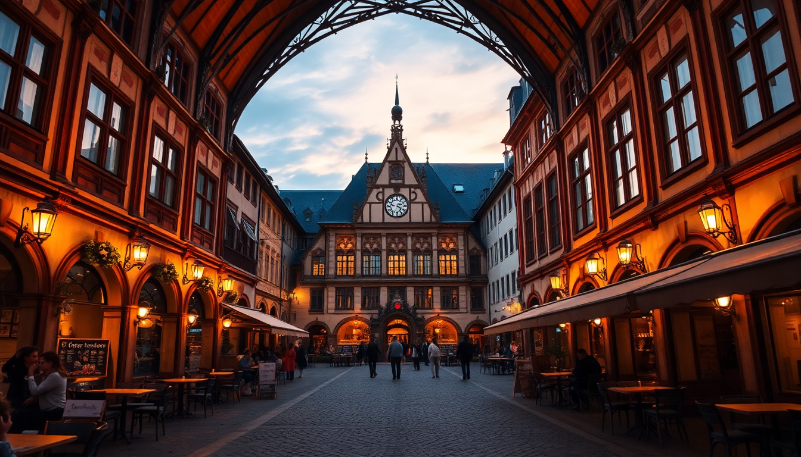

Munich Beer Halls & Breweries: Where Locals Actually Drink

I’ve spent more evenings than I can count working my way through Munich’s beer halls and breweries. The city runs on Reinheitsgebot (the 1516 purity law) and a no-nonsense attitude toward good beer. You won’t find craft-IPA hype here — just centuries-old recipes served by waiters who’ve been pouring them for decades. Here’s where I actually go, what I order, and which spots are worth your time.
What’s the difference between a beer hall and a brewery taproom?
It’s not just semantics. A beer hall (Bierhalle) is a large, communal drinking room — often attached to a brewery, but not always. Think long wooden tables, brass bands, and liters of helles or dunkel. A brewery taproom (Brauereiausschank) is smaller, attached directly to the working brewery, and usually serves fresher beer straight from the tank.
I prefer taprooms when I want to taste the difference between a week-old batch and a fresh one. Beer halls are better for groups, pretzels the size of your head, and that loud, sweaty energy that makes Munich feel like Munich.
Key places to know:
- Hofbräuhaus — the most famous beer hall, tourist-heavy but worth one visit for the sheer spectacle
- Augustiner Bräustuben — my favorite beer hall, less crowded, better food
- Taxisgarten — a taproom attached to Giesinger Bräu, very local, very good
Which beer hall should I skip, and which should I prioritize?
Skip Hofbräuhaus for a full meal unless you’re okay with elbow-to-elbow seating and overpriced schnitzel. I go there exactly once each trip — to show first-timers the painted ceiling and the oompah band — then I leave. The beer is fine (HB is a solid mass-market helles), but the experience is more zoo than pub.
Prioritize Augustiner Bräustuben near the main train station. It’s huge, wood-paneled, and filled with locals who’ve been coming for decades. The Augustiner Edelstoff — a slightly stronger, unfiltered helles — is the best large-brewery beer in Munich, in my opinion. Pair it with the roast pork and a dumpling, and you’ll understand why I keep going back.
Other solid beer halls:
- Löwenbräukeller — big, tourist-friendly, but the beer garden is lovely in summer
- Paulaner am Nockherberg — home of the Starkbierfest (strong beer festival) in Lent
- Hacker-Pschorr Bräuhaus — good food, decent beer, but feels a bit corporate
Where do locals actually drink in Munich?
Locals don’t hang at Hofbräuhaus. They go to Giesinger Bräu in the Giesing neighborhood — a small, independent brewery that started in 2010 and now has a cult following. Their Zwickl (unfiltered helles) is cloudy, creamy, and tastes like bread crust. The taproom has a concrete floor, no frills, and a crowd of people who can talk beer chemistry for hours.
Another local favorite: Taxisgarten, the Giesinger Bräu beer garden in the old Taxis neighborhood. It’s under a massive chestnut tree, kids run around, and you can bring your own food if you buy their beer. I’ve spent whole afternoons there with a liter and a salami sandwich from the nearby butcher.
Neighborhoods to explore:
- Giesing — up-and-coming, brewery central
- Haidhausen — French Quarter vibes, good beer bars like Zum Alten Markt
- Schwabing — student-heavy, cheaper beer at Alter Simpl
What’s the deal with beer gardens in Munich?
Beer gardens (Biergärten) are the summer lifeblood of the city. The rule: you can bring your own food (Brotzeit) but must buy your beer from the garden. This keeps prices low — a liter usually runs €7–€9, which is cheap for a major European city.
My favorite is Chinesischer Turm in the English Garden. It’s massive (7,000 seats), but the crowd spreads out into the park. Go on a sunny Sunday afternoon. Bring a blanket, a cheese board, and a book. The beer comes from Hofbräu, but the setting makes it taste better.
Best beer gardens:
- Seehaus im Englischen Garten — lakefront, pricier, but gorgeous
- Augustiner-Keller — huge, family-friendly, with a playground
- Biergarten am Viktualienmarkt — right in the market, great for people-watching
Should I visit any breweries outside the city center?
Yes, absolutely. Ayinger Brewery is a 30-minute S-Bahn ride southeast to the village of Aying. Their taproom serves fresh Ayinger Jahrhundert (a helles that won gold at the World Beer Cup) and Celebrator (a doppelbock that comes with a plastic goat on the bottle). The brewery tour is small, hands-on, and includes a tasting of beer straight from the storage tank. It’s the best brewery tour I’ve done in Germany.
Closer to town, Brauerei Weihenstephan in Freising (20 minutes by regional train) claims to be the world’s oldest brewery, operating since 1040. The tour is more polished, but the beer is flawless — their Hefeweissbier is the benchmark for the style.
Brewery tour tips:
- Book Ayinger online in advance; they cap groups at 20
- Weihenstephan has a brewery restaurant that serves beer cheese soup
- Both are easy day trips from Munich Hauptbahnhof
What should I order at a Munich beer hall?
Stick to the classics. Helles (pale lager) is the everyday drink — crisp, malty, 4.5–5% ABV. Dunkel (dark lager) is richer, with chocolate notes. Weissbier (wheat beer) is cloudy, fruity, and served in a tall vase-like glass. Avoid the “Radler” (beer mixed with lemon soda) unless you’re driving — it’s what I order when I need to pace myself.
If you’re feeling adventurous, try Starkbier during Lent (March–April). It’s a strong, malty doppelbock that hits 7–9% ABV. Paulaner’s Salvator is the most famous. It’s served in a special ceramic mug and goes down dangerously smooth.
What to pair with your beer:
- Obatzda — a spiced cheese spread with pretzels
- Schweinshaxe — roasted pork knuckle, crispy skin
- Weisswurst — white veal sausages with sweet mustard (breakfast only, traditionally before noon)
FAQ
Is Hofbräuhaus really worth visiting? Yes, but only once, and go early. Arrive before 11:00 AM on a weekday to get a seat in the main hall without a wait. Order a Maß (liter) of helles and a pretzel. Stay for 45 minutes, take a photo of the ceiling, then leave. The beer is fine, but the atmosphere is a caricature of itself.
Can I bring my own food into a beer garden? Yes, at most traditional beer gardens. Look for signs that say “Brotzeit selbst mitbringen” (bring your own snack). You must buy your beer from the garden — they’ll check at the table. I usually bring a hard cheese, some salami, and a loaf of bread from the Viktualienmarkt.
What’s the best time of year to visit Munich for beer? Late September for Oktoberfest, obviously, but also March for Starkbierfest at Paulaner am Nockherberg. If you want fewer crowds, come in May or June — the beer gardens are open, the weather is warm, and you can actually get a seat.
Conclusion
- Skip Hofbräuhaus for eating; go to Augustiner Bräustuben or Giesinger Bräu instead
- Beer gardens are the best value — bring your own food, buy their beer
- Take the S-Bahn to Aying for the best brewery tour near Munich
- Order helles or dunkel as your default; try Starkbier if you’re there in March
- Locals drink at Giesinger Bräu, Taxisgarten, and Augustiner-Keller — not the tourist traps